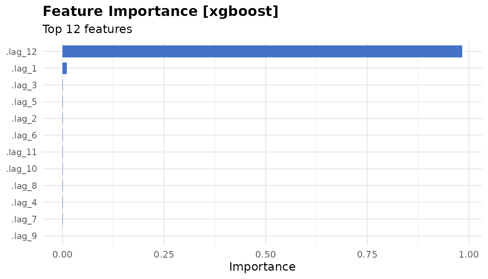

library(milt)
#> milt 0.1.0 — Modern Integrated Library for Timeseries
#> Use `list_milt_models()` to see available models.Overview
Feature engineering in milt is done with milt_step_*()
functions that each accept and return a MiltSeries. They
compose naturally with the native pipe |>.
1. Lag features
air <- milt_series(AirPassengers)
air_lg <- milt_step_lag(air, lags = 1:12)
print(air_lg)
#> # A MiltSeries: 132 x 1 [monthly]
#> # Time range : 1950 Jan — 1960 Dec
#> # Components : value
#> # Gaps : none
#> # A tibble: 6 × 14
#> time value .lag_1 .lag_2 .lag_3 .lag_4 .lag_5 .lag_6 .lag_7 .lag_8
#> <date> <dbl> <dbl> <dbl> <dbl> <dbl> <dbl> <dbl> <dbl> <dbl>
#> 1 1950-01-01 115 118 104 119 136 148 148 135 121
#> 2 1950-02-01 126 115 118 104 119 136 148 148 135
#> 3 1950-03-01 141 126 115 118 104 119 136 148 148
#> 4 1950-04-01 135 141 126 115 118 104 119 136 148
#> 5 1950-05-01 125 135 141 126 115 118 104 119 136
#> 6 1950-06-01 149 125 135 141 126 115 118 104 119
#> # ℹ 4 more variables: .lag_9 <dbl>, .lag_10 <dbl>, .lag_11 <dbl>, .lag_12 <dbl>
#> # … with 126 more rows2. Rolling statistics
air_roll <- milt_step_rolling(air, windows = c(3, 6, 12), fns = c("mean", "sd"))
print(air_roll)
#> # A MiltSeries: 133 x 1 [monthly]
#> # Time range : 1949 Dec — 1960 Dec
#> # Components : value
#> # Gaps : none
#> # A tibble: 6 × 8
#> time value .rolling_mean_3 .rolling_sd_3 .rolling_mean_6 .rolling_sd_6
#> <date> <dbl> <dbl> <dbl> <dbl> <dbl>
#> 1 1949-12-01 118 114. 8.39 129. 18.0
#> 2 1950-01-01 115 112. 7.37 123. 15.9
#> 3 1950-02-01 126 120. 5.69 120. 10.7
#> 4 1950-03-01 141 127. 13.1 120. 12.3
#> 5 1950-04-01 135 134 7.55 123. 13.6
#> 6 1950-05-01 125 134. 8.08 127. 9.89
#> # ℹ 2 more variables: .rolling_mean_12 <dbl>, .rolling_sd_12 <dbl>
#> # … with 127 more rows3. Fourier terms
Fourier terms capture complex seasonality:
air_f <- milt_step_fourier(air, period = 12, K = 3)
print(air_f)
#> # A MiltSeries: 144 x 1 [monthly]
#> # Time range : 1949 Jan — 1960 Dec
#> # Components : value
#> # Gaps : none
#> # A tibble: 6 × 8
#> time value .fourier_sin_1 .fourier_cos_1 .fourier_sin_2 .fourier_cos_2
#> <date> <dbl> <dbl> <dbl> <dbl> <dbl>
#> 1 1949-01-01 112 5 e- 1 8.66e- 1 8.66e- 1 0.5
#> 2 1949-02-01 118 8.66e- 1 5 e- 1 8.66e- 1 -0.5
#> 3 1949-03-01 132 1 e+ 0 6.12e-17 1.22e-16 -1
#> 4 1949-04-01 129 8.66e- 1 -5 e- 1 -8.66e- 1 -0.500
#> 5 1949-05-01 121 5 e- 1 -8.66e- 1 -8.66e- 1 0.5
#> 6 1949-06-01 135 1.22e-16 -1 e+ 0 -2.45e-16 1
#> # ℹ 2 more variables: .fourier_sin_3 <dbl>, .fourier_cos_3 <dbl>
#> # … with 138 more rows4. Calendar features
tbl <- tibble::tibble(
date = seq(as.Date("2020-01-01"), by = "day", length.out = 365),
value = rnorm(365, 100, 10)
)
s_daily <- milt_series(tbl, time_col = "date", value_cols = "value")
s_cal <- milt_step_calendar(s_daily)
print(s_cal)
#> # A MiltSeries: 365 x 1 [daily]
#> # Time range : 2020-01-01 — 2020-12-30
#> # Components : value
#> # Gaps : none
#> # A tibble: 6 × 9
#> date value .year .month .quarter .week .day_of_week .is_weekend
#> <date> <dbl> <int> <int> <int> <int> <int> <int>
#> 1 2020-01-01 86.0 2020 1 1 1 3 0
#> 2 2020-01-02 103. 2020 1 1 1 4 0
#> 3 2020-01-03 75.6 2020 1 1 1 5 0
#> 4 2020-01-04 99.9 2020 1 1 1 6 1
#> 5 2020-01-05 106. 2020 1 1 1 7 1
#> 6 2020-01-06 111. 2020 1 1 2 1 0
#> # ℹ 1 more variable: .day_of_month <int>
#> # … with 359 more rows5. Scaling
milt_step_scale() normalises values and returns an
invertible step object:
out <- milt_step_scale(air, method = "zscore")
air_z <- out$series # scaled MiltSeries
scaler <- out$step # MiltScaleStep — keeps centering/scaling params
# Verify: mean ≈ 0, sd ≈ 1
cat("Mean:", round(mean(air_z$values()), 4), "\n")
#> Mean: 0
cat("SD: ", round(sd(air_z$values()), 4), "\n")
#> SD: 1
# Invert
air_back <- milt_step_unscale(scaler, air_z)
cat("Original max:", max(air$values()), "\n")
#> Original max: 622
cat("Restored max:", max(air_back$values()), "\n")
#> Restored max: 6226. Chaining steps
Steps compose with |>:
air_features <- air |>
milt_step_lag(lags = 1:6) |>
milt_step_rolling(windows = 3, fns = "mean") |>
milt_step_fourier(period = 12, K = 2)
print(air_features)
#> # A MiltSeries: 136 x 1 [monthly]
#> # Time range : 1949 Sep — 1960 Dec
#> # Components : value
#> # Gaps : none
#> # A tibble: 6 × 13
#> time value .lag_1 .lag_2 .lag_3 .lag_4 .lag_5 .lag_6 .rolling_mean_3
#> <date> <dbl> <dbl> <dbl> <dbl> <dbl> <dbl> <dbl> <dbl>
#> 1 1949-09-01 136 148 148 135 121 129 132 144
#> 2 1949-10-01 119 136 148 148 135 121 129 134.
#> 3 1949-11-01 104 119 136 148 148 135 121 120.
#> 4 1949-12-01 118 104 119 136 148 148 135 114.
#> 5 1950-01-01 115 118 104 119 136 148 148 112.
#> 6 1950-02-01 126 115 118 104 119 136 148 120.
#> # ℹ 4 more variables: .fourier_sin_1 <dbl>, .fourier_cos_1 <dbl>,
#> # .fourier_sin_2 <dbl>, .fourier_cos_2 <dbl>
#> # … with 130 more rows7. Using features with an ML model
# Scale → fit → forecast
scaled_out <- milt_step_scale(air, method = "zscore")
air_scaled <- scaled_out$series
scaler <- scaled_out$step
m <- milt_model("xgboost", lags = 1:12) |> milt_fit(air_scaled)
#> Fitting <MiltXGBoost> model…
#> Done in 0.05s.
fct <- milt_forecast(m, 12)
# Point forecasts back in original units
fct_vals_orig <- scaler$inverse_transform_vector(fct$as_tibble()$.mean)
cat("Forecast (original units):\n")
#> Forecast (original units):
print(round(fct_vals_orig, 1))
#> [1] 443.0 417.3 444.3 463.7 532.7 563.1 611.1 606.7 550.8 461.1 417.6 440.68. Model explainability
After fitting an ML model, inspect feature importance:
m <- milt_model("xgboost", lags = 1:12) |> milt_fit(air)
#> Fitting <MiltXGBoost> model…
#> Done in 0.04s.
exp <- milt_explain(m)
print(exp)
#> # MiltExplanation [xgboost]
#> # Features: 12# Top feature importances:
#> # A tibble: 10 × 2
#> feature importance
#> <chr> <dbl>
#> 1 .lag_12 0.984
#> 2 .lag_1 0.0108
#> 3 .lag_3 0.00124
#> 4 .lag_5 0.000658
#> 5 .lag_2 0.000570
#> 6 .lag_6 0.000538
#> 7 .lag_11 0.000523
#> 8 .lag_10 0.000504
#> 9 .lag_8 0.000440
#> 10 .lag_4 0.000430
plot(exp)